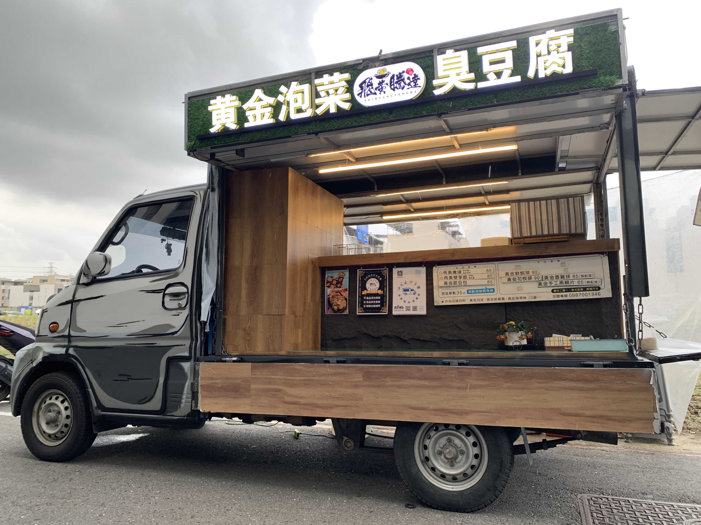
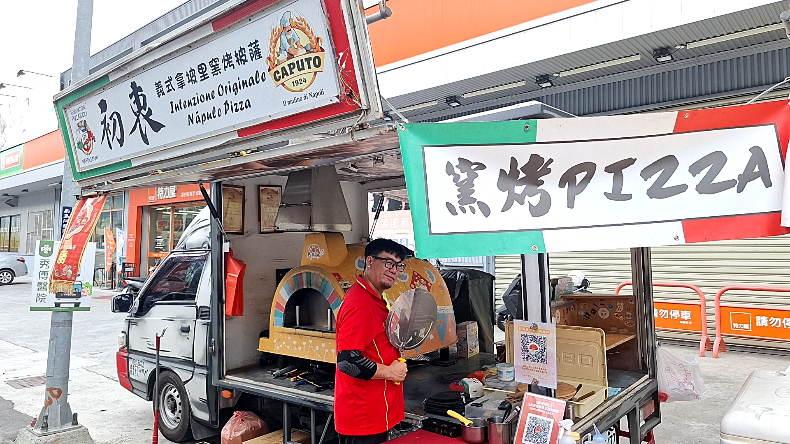
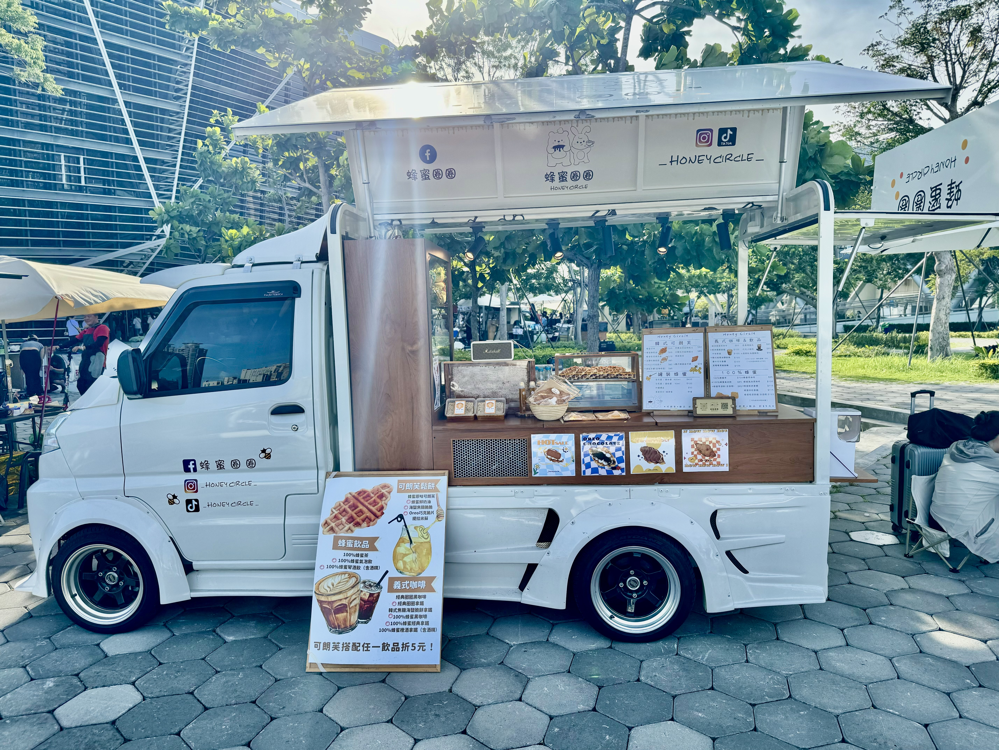
品牌介紹：
蜂蜜圈專賣🔺義式咖啡🔺蜂蜜飲品🔺韓式可朗芙🔺
韓式可朗芙又稱可頌鬆餅！
是韓國流行小點，吃起來口感酥脆，甜度適中！
蜂蜜特調飲品，使用的蜂蜜都是自家養殖100%自然熟成蜜！（來自台東妡蜜蜂場）
自然熟成蜜沒有經過任何加工跟濃縮，所以喝起帶有花香氣又不死甜！
義式咖啡我是是用專業的義式咖啡機萃取咖啡液，咖啡豆挑選為中深焙，口感厚實帶有巧克力堅果香氣！
主要販售品項：義式咖啡 / 蜂蜜飲產品 / 可頌鬆餅
查看產品圖片
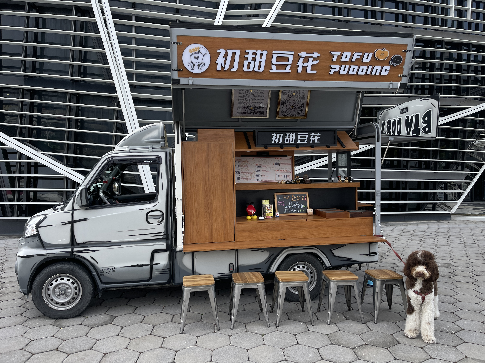
品牌介紹：
初甜💫來自基隆廟口⛩的豆花餐車🚚
將傳統文化結合餐車模式🚚
巡迴快閃全臺各縣市
帶給冰友們🧊清涼消暑❄️
✨初甜✨
豆花都是使用非基因改黃豆
傳統作法使得豆花Q彈滑嫩
主打邊走邊喝改變刻板印象
顛覆傳統改用手搖杯漱豆花🥤
✨糖水✨
職人精神堅持手炒糖焦糖香氣四溢
✨特色飲品✨
檸檬🍋金桔🍊來自屏東在地小農
飲品的糖都是手炒糖
建議甜度至少半糖才不失最佳風味
主要販售品項：豆花 / 飲品 / 甜品 / 甜湯
查看產品圖片
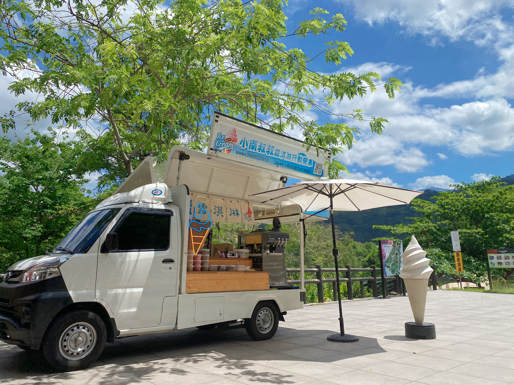
品牌介紹：
來自南國陽光最熱情的屏東，小南叔叔霜淇淋從一開始的簡單小攤車，到如今累積三年的好口碑，一路走來都只堅持一件事——用最實在的味道，給大家最單純的快樂。
三年來，跑遍大小市集、園遊會、企業活動、廟會與各地慶典，無論風吹日曬，只為讓更多人吃到這份從屏東慢慢擴散出去的甜蜜。
而最讓人暖心的是，每一支霜淇淋，都是小南叔叔親手捧出的真誠與熱情。
從屏東出發，帶著夢想、努力與一台霜淇淋機，把甜味送到每一個笑容的地方。
如果你還沒吃過，那絕對值得來一支；如果你吃過了，你就知道——那不是普通的霜淇淋，那是小南叔叔的招牌療癒魔法。
主要販售品項：霜淇淋
查看產品圖片
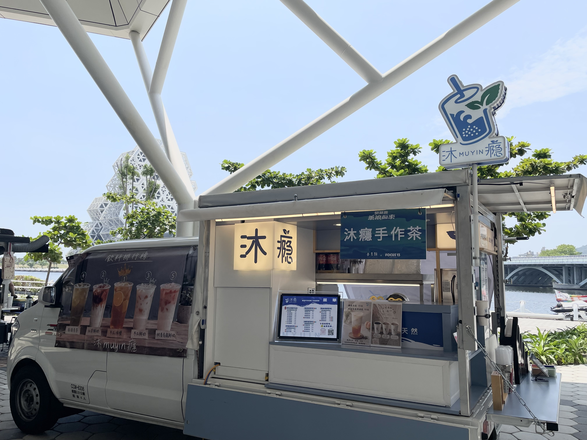
品牌介紹：
沐癮。
一台出沒在高雄的行動飲料餐車。
堅持手工熬煮冬瓜、現點現萃茶飲，
希望每一杯都保留自然順口的味道。
想做出那種逛街、散步時，
會讓人想慢慢喝完的飲料～
主要販售品項：
【手工熬煮冬瓜】
* 冬瓜檸檬 / * 冬瓜鮮奶 / * 冬瓜茶 / * 冬瓜紅茶 / * 冬瓜綠茶
* 冬瓜青茶 / * 冬瓜麥茶 / * 冬瓜觀音
【萃茗茶系列】
* 桃香烏龍 / * 魚池紅玉
【風味特調系列】
* 梅子可樂 / * 藍莓果茶
【現萃茶系】
* 香韻紅茶 / * 清韻綠茶 / * 春韻青茶 / * 炭焙觀音
【鮮奶茶系列】
* 紅茶鮮奶 / * 綠茶鮮奶 / * 青茶鮮奶 / * 觀音鮮奶 / * 桃香烏龍鮮奶
【冬季限定】
* 桂圓紅棗 / * 香醇可可
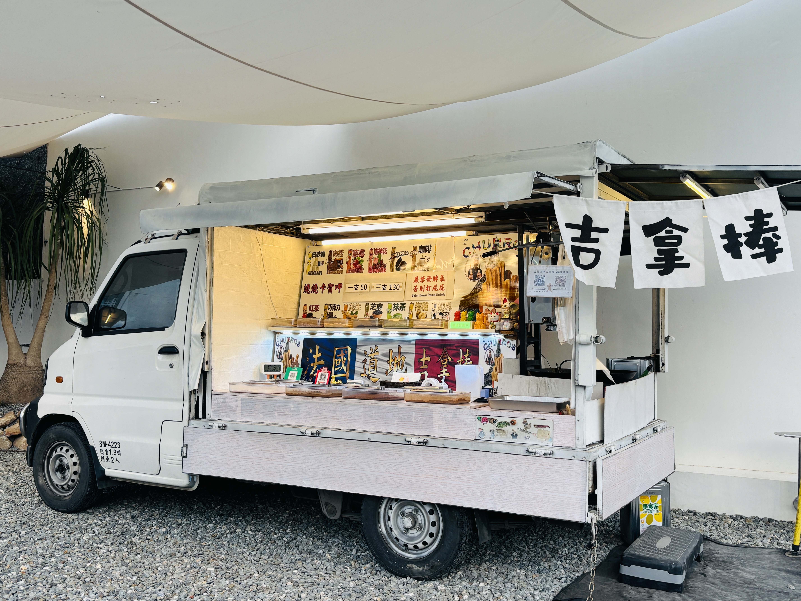
品牌介紹：我們是專賣傳統整支長長的吉拿棒餐車，吉拿棒口味達市面上最多13種！水果類皆由純天然果乾製成～素食者也可享用哦！
主要販售品項：吉拿棒 / 微笑薯餅 / 地瓜QQ球 / 泰奶 / 可爾必思 / 紅茶
查看產品圖片
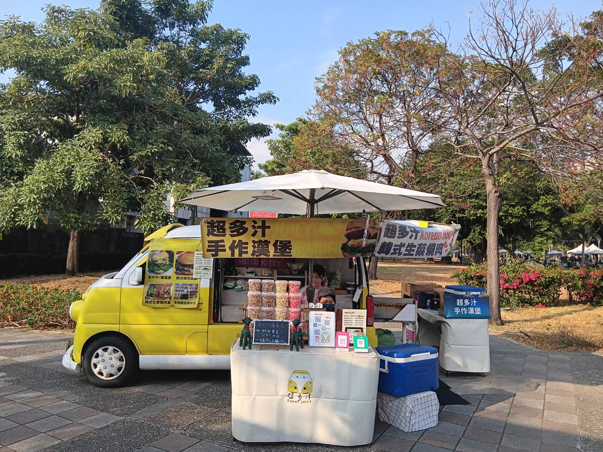
品牌介紹：
我們是喜歡到處趴趴走的餐車
我們有堅持手作牛肉豬肉的漢堡排
讓大家都能享受到多汁的漢堡
也有價格親民的韓式燒肉
更有唰嘴的手炒爆米花
一口接一口停不下來
歡迎來吃美食聊天哦🍔🥓🍿
主要販售品項：手作漢堡 / 韓式燒肉 / 手炒爆米花
查看產品圖片
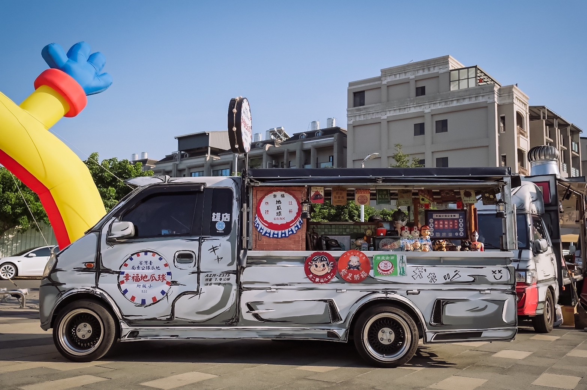
品牌介紹：
品牌特色
✔ 傳統手藝：遵循古法製作，還原地瓜球最純正的風味。
✔ 嚴選食材：使用優質地瓜與天然原料，不添加多餘添加物。
✔ 黃金比例：精心研發配方，打造外酥內Q、不油膩的絕佳口感。
✔ 小顆經典：不同於大顆地瓜球，小顆地瓜球更易於入口，越吃越涮嘴。
主要販售品項：地瓜球
查看產品圖片
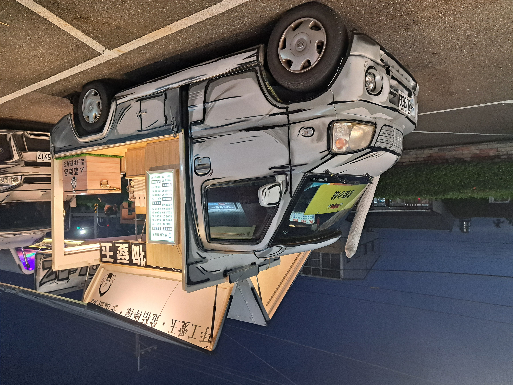
品牌介紹：
我們是 一台人工職人(專職賣)
🍋手洗檸檬愛玉餐車※
我們的愛玉籽是來自嘉義[阿里山]
野生品種※
採用手洗方式來-製作成整塊-
《讓愛玉保留有濃濃 彈性膠質》
《口感入口即化》
《味道有淡淡植物香》
在加上屏東小農種的
(檸檬-金桔-甘蔗-)
自己手炒糖-真的是可以喝到50年代爸爸傳承下來的好手藝
主要販售品項：手洗檸檬愛玉
查看產品圖片
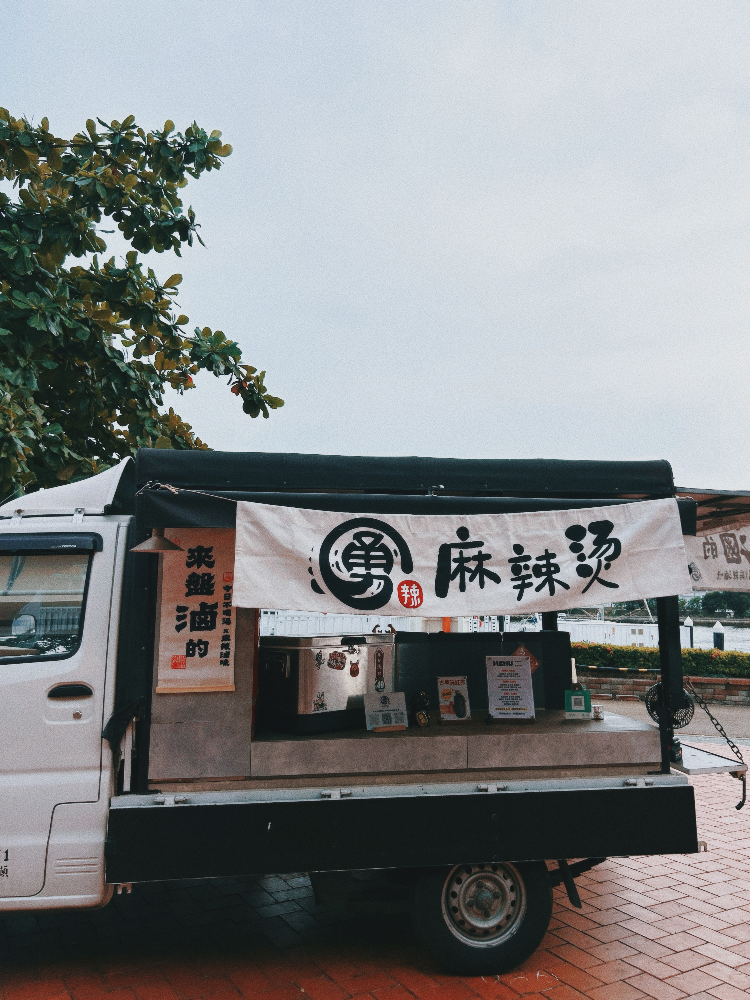
品牌介紹：
勇辣❞把招牌麻辣湯
變成更涮嘴的麻辣滷味啦～
很想吃辣 不想喝湯
可以來市集找我們吃麻辣滷味
嚴選火鍋料 × 手炒辣醬 × 自製川味粉
香氣一上來，真的會忍不住一口接一口
主要販售品項：麻辣滷味
查看產品圖片
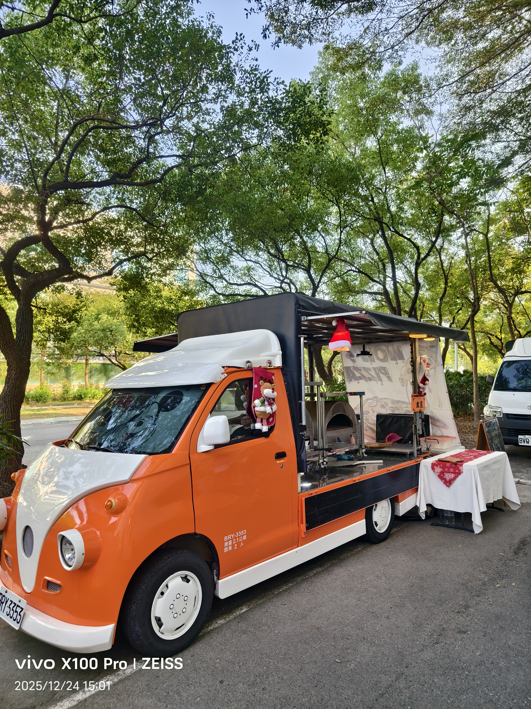
品牌介紹：
1. Wow's Pizza 我是披薩的前身為 Color's Pizza ,當初為了圓 夢~"做出老少咸宜的平價窯烤 PIZZA"，創立了手工窯烤 PIZZA 行 動餐車。但 Color's Pizza 在獲食尚玩家，民視等各大媒體報導 後，即被別人先行註冊，故老闆只好改以 Wow's Pizza(我是披薩) 註冊重新出發，希望讓更多人認識這個品牌，2023年參加高雄市政府 舉辦第一屆的城市嶼浪市集網路人氣比賽得到第一名
2. 每日手工製作麵糰餅皮，堅持嚴格把關每道工序，主打低鹽少 油更健康，餅皮外酥內軟可咀嚼出麵粉的香氣且吃了不會脹氣
3.手工窯烤 PIZZA 現點現做可依客人需求調整食材內容90秒快速出爐。
主要販售品項：披薩
查看產品圖片
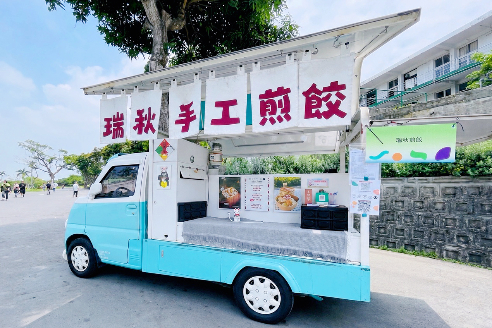
品牌介紹：瑞秋煎餃傳承爸媽近20年好味道，堅持選用新鮮食材，精心調配比例，現煎手工煎餃搭配健康沙拉，打造道地又清爽的美味。透過行動餐車穿梭高屏南台灣各大市集和活動，讓更多人享受熱騰騰的家鄉味與貼心服務。
主要販售品項：手工煎餃 / 蘿蔔糕
查看產品圖片
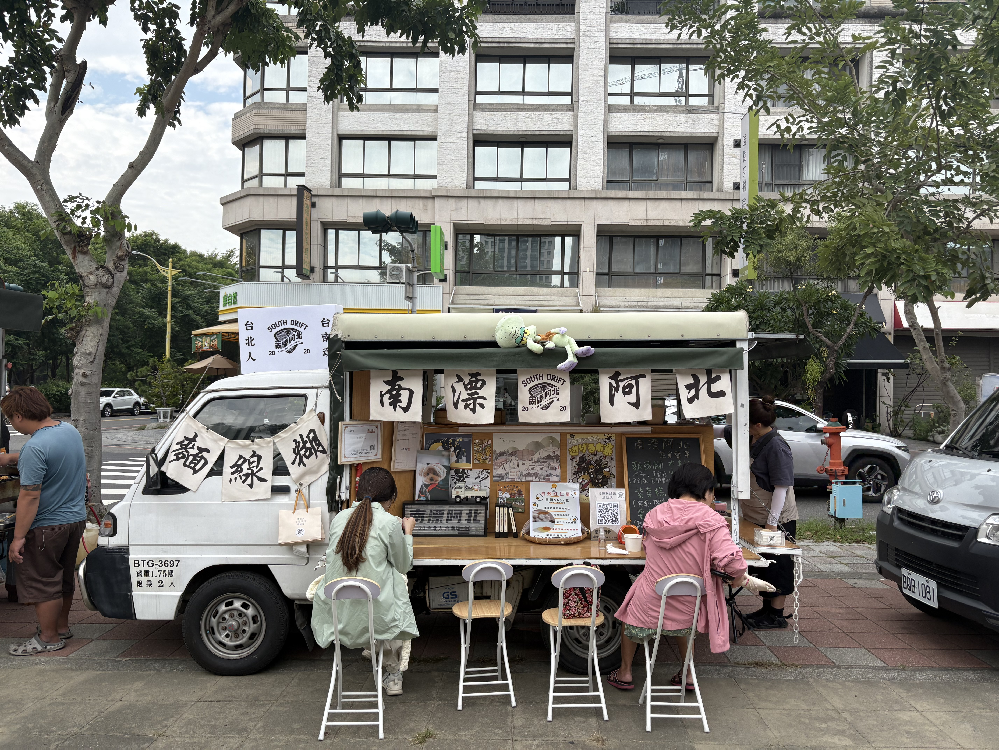
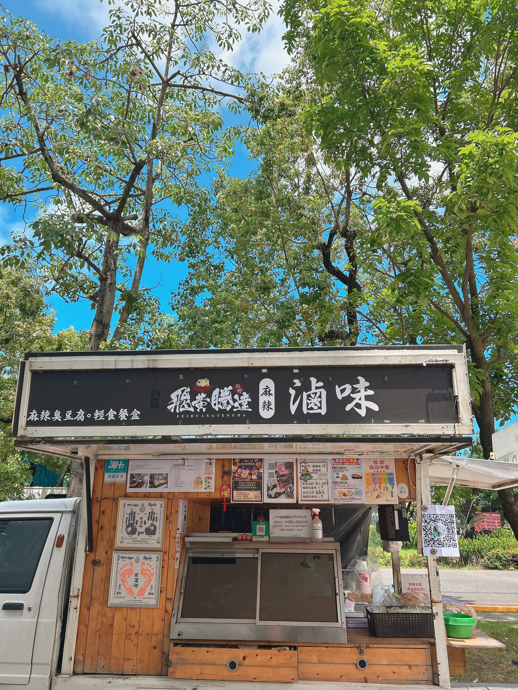
品牌介紹：
飛黃騰達-滷味行動餐車
起航 於 2021/01/15
本 餐車 冷 / 熱滷味 都🈶️
《（冷滷味加熱）/青菜/麵點/火鍋料》
一次🈵️足 各位粉粉們 您的味蕾
在這 冷冷的天氣裡 暖和您的胃
#市集活動
#歡迎
#廟會包車
#公司行號包車
#校園活動
主要販售品項：冷 / 熱 / 麻辣 滷味 / 輕食餐盒
查看產品圖片
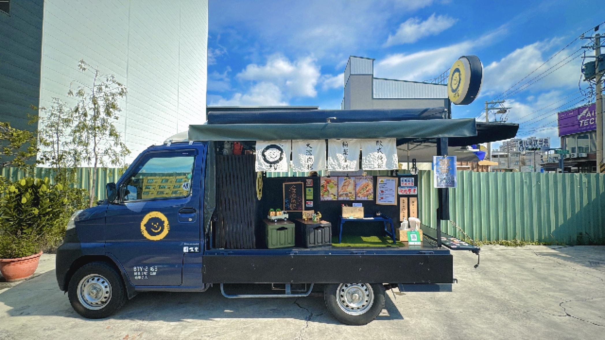
品牌介紹：
《哩賀·粿粿》行動餐車來自台南永康！
傳承阿公50年手藝的「大灣肉粿」，煎得外香內軟，肉燥醬汁是靈魂。另有古早味粉漿蛋餅，口感軟Q、蛋香濃郁；以及歐式燒餅，外酥內香、清爽不膩。每一口都是滿滿懷念的好味道！
主要販售品項：大灣肉粿 / 歐式燒餅 / 粉漿蛋餅
查看產品圖片
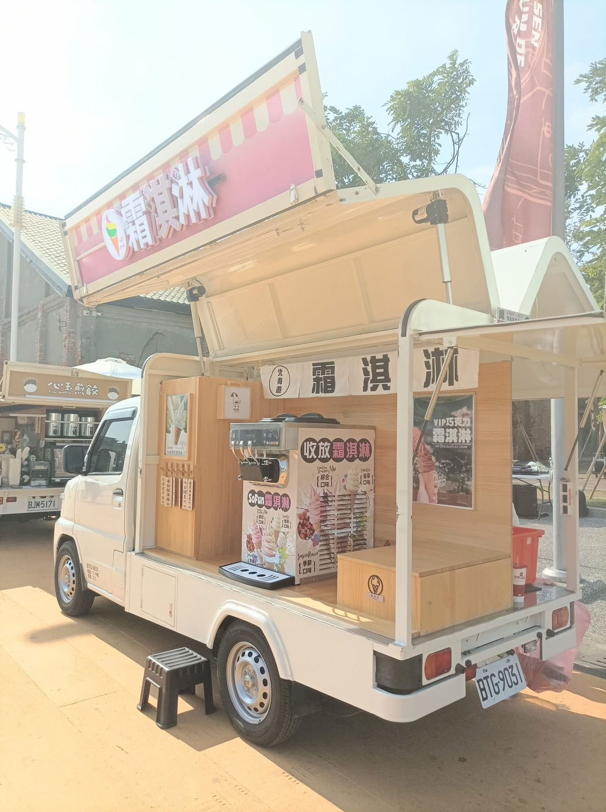